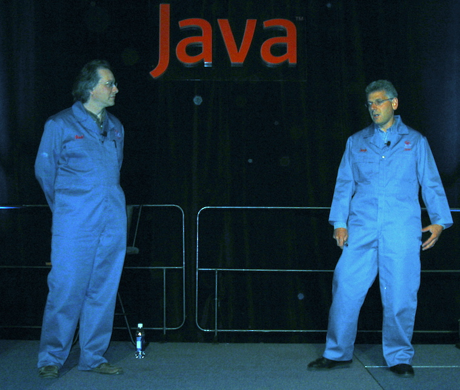

Kotlin Intro by
Jim J. Moore is licensed under
a Creative Commons Attribution 4.0 International License.
Presentation source at https://github.com/jdigger/kotlin-intro-preso
Kotlin Intro
as of 1.2
Motivations
Statically typed (JVM and JS)
Safe, concise, great interop
Functional and OO paradigms
Focus on pragmatism
We’ve built tools to support so many nice languages, and we’re still using Java
— JetBrains in 2010
Major JVM Alternatives to the JLS
Dynamic and Pragmatic: Groovy
trivial on-ramp from Java
.java→.groovy
build Java conventions (e.g., Beans) into language support
the focus was always “how do we make programmer’s lives easier?” over “purity”
very sophisticated (almost Lisp-level) meta-programming capabilities
static compilation when you want it, dynamic otherwise
first major JVM language to have closures, seamless collections support, etc.
Groovy Problems
that focus on experimentation/pragmatism over purity led to some problems over time
dynamic groovy isn’t fast enough for scripts (starting the JVM), too slow for many server tasks, and not safe enough for “large” systems
“too slow” changed over time, especially when the JVM added “indy” support and better GC
@CompileStaticlet it be a better Java, but a handcuffed Groovy
Functional Hybrid: Scala
strongly encourages “true” Functional programming
allows ready “escape valves” for imperitive programming for Java interop, performance, or just because that’s what’s understood
deep and rich type system allow for much more “provably correct” systems
moves a tremendous amount of work away from the programmer and to the compiler
the FP focus and strong type systems make it a natural home for big data processing, complex concurrent systems, etc.
Scala Problems
the conceptual overhead can be tough for people without a Masters in Category Theory
if you don’t grok currying the monads, it can be tough slogging
“wrap all the things; then wrap them again”
converting between types (especially for Java interop) involves a lot of wrapping and unwrapping
between all the symbols and non-intuative rules (e.g.
::) it can take a while to get used tocompilation can be slooow and binary incompatability

Example Kotlin
class Person(val firstName: String, val lastName: String) {
val fullName get() = "$firstName $lastName"
}Example to Java
public final class Person {
@NotNull
private final String firstName;
@NotNull
private final String lastName;
public Person(@NotNull String firstName, @NotNull String lastName) {
Intrinsics.checkParameterIsNotNull(firstName, "firstName");
Intrinsics.checkParameterIsNotNull(lastName, "lastName");
super();
this.firstName = firstName;
this.lastName = lastName;
}
@NotNull
public final String getFullName() {
return this.firstName + ' ' + this.lastName;
}
@NotNull
public final String getFirstName() {
return this.firstName;
}
@NotNull
public final String getLastName() {
return this.lastName;
}
}public final class Person {
...Item 17: Design and document for inheritance or else prohibit it
— Effective Java
In specific cases this can be a pain, such as with Spring. But there’s a trivial fix.
Kotlin’s type system is aimed at eliminating the danger of null references from code, also known as the The Billion Dollar Mistake.
— Kotlin Docs
@NotNull
private final String firstName;
@NotNull
public final String getFirstName()
//...
Intrinsics.checkParameterIsNotNull(firstName, "firstName");@NotNull
private final String firstName;
//...
public Person(@NotNull String firstName, @NotNull String lastName) {
Intrinsics.checkParameterIsNotNull(firstName, "firstName");
Intrinsics.checkParameterIsNotNull(lastName, "lastName");
super();
this.firstName = firstName;
this.lastName = lastName;
}Item 15: Minimize Mutability
— Effective Java
Collections Mutability
val list = listOf("a", "b")
// list.add("c") <- compiller error
println("list instance " + list.javaClass)
// list instance class java.util.Arrays$ArrayList
// (list as java.util.List<String>).add("c") <- throws java.lang.UnsupportedOperationException
val mlist = mutableListOf("a", "b")
mlist.add("c")
println("mlist instance " + mlist.javaClass)
// mlist instance class java.util.ArrayList@NotNull
private final String firstName;
@NotNull
public final String getFirstName() {
return this.firstName;
}Item 14: In public classes, use accessor methods, not public fields
— Effective Java
Computed Properties, Implicit Types, and String Interpolation
val fullName get() = "$firstName $lastName"@NotNull
public final String getFullName() {
return this.firstName + ' ' + this.lastName;
}Sensible Class Defaults
class Person(val firstName: String, val lastName: String) {
val fullName get() = "$firstName $lastName"
}Kotlin auto-hides (makes private) a class’s internals (e.g., fields)
The default visibility is
publicThe default way of accessing a class’s data is through its properties (getters and setters)
The default for classes, fields, methods, local variables, etc. is to be
finalThe default constructor makes sure the class is fully initialized
Exceptions are “runtime”
But What About equals() hashCode() etc?
Aren’t there “sensible defaults” for those too?
data class Person(val firstName: String, val lastName: String) {
val fullName get() = "$firstName $lastName"
}// ... everything before, and in addition ...
public String toString() {
return "Person(firstName=" + this.firstName + ", lastName=" + this.lastName + ")";
}
public int hashCode() {
return (this.firstName != null ? this.firstName.hashCode() : 0) * 31 + (this.lastName != null ? this.lastName.hashCode() : 0);
}
public boolean equals(Object var1) {
if (this != var1) {
if (var1 instanceof Person) {
Person var2 = (Person)var1;
if (Intrinsics.areEqual(this.firstName, var2.firstName) && Intrinsics.areEqual(this.lastName, var2.lastName)) {
return true;
}
}
return false;
} else {
return true;
}
}
@NotNull
public final Person copy(@NotNull String firstName, @NotNull String lastName) {
Intrinsics.checkParameterIsNotNull(firstName, "firstName");
Intrinsics.checkParameterIsNotNull(lastName, "lastName");
return new Person(firstName, lastName);
}
@NotNull
public final String component1() {
return this.firstName;
}
@NotNull
public final String component2() {
return this.lastName;
}
// $FF: synthetic method
// $FF: bridge method
@NotNull
public static Person copy$default(Person var0, String var1, String var2, int var3, Object var4) {
if ((var3 & 1) != 0) {
var1 = var0.firstName;
}
if ((var3 & 2) != 0) {
var2 = var0.lastName;
}
return var0.copy(var1, var2);
}All that’s cool, but I can get most of that with Project Lombok…
Kotlin form of that copy method
Kotlin has named parameters and parameter defaults. The Kotlin form of that copy method is actually
fun copy(firstName: String = this.firstName,
lastName: String = this.lastName) =
Person(firstName, lastName)which means I can write
val jimMoore = Person("Jim", "Moore")
val kellyMoore = jimMoore.copy(firstName = "Kelly")
val jim2 = jimMoore.copy() // silly "defensive copy", since immutableThe componentN methods allow for "destructuring"
val jimMoore = Person("Jim", "Moore")
val (fn, ln) = jimMoore
val kellyMoore = jimMoore.copy(firstName = "Kelly")
val people = listOf(jimMoore, kellyMoore)
val firstNames = people.map { person -> person.firstName }
val lnFn = people.map { (firstName, lastName) -> "$lastName, $firstName" }
val lastNames = people.map { (_, lastName) -> lastName }Kotlin Declaration
fun copy(firstName: String = this.firstName,
lastName: String = this.lastName) =
Person(firstName, lastName)It looks like an expression because it is: there’s a heavy preference for expressions over statements
The return type can be specified, but it’s infered from the RHS (Right Hand Side) since equality is symetric
Can You Spot the Java Bug?
public static void printIncOne(Integer i) {
System.out.println(i + 1);
}Invoke the Method
public static void printIncOne(Integer i) {
System.out.println(i + 1); // throws NullPointerException
}
public static void main(String[] args) {
printIncOne(null);
}Nulls
Null is a first-class part of the type system
Similar to
nullin SQL, it’s not “just another value” but truly “the absense of a value”If a value may have a null, its type-specification MUST declare that; otherwise it’s not allowed
The Kotlin docs has a simple write-up on Null Safety and how to work with it
Null Idiom Example
val files = File("Test").listFiles() // Array<out File>?
println(files?.size ?: "empty")as Java
File[] files = (new File("Test")).listFiles();
Object var2 = files != null ? files.length : "empty";
System.out.println(var2);Kotlin Version of incrOne
fun incrOne(i: Int) {
println(i + 1)
}
fun incrOneNullable(i: Int?) {
println(i + 1) // <- compiler error
if (i != null) {
println(i + 1)
}
}Kotlin incrOne → Java
public static final void incrOne(int i) {
int var1 = i + 1;
System.out.println(var1);
}
public static final void incrOneNullable(@Nullable Integer i) {
if (i != null) {
int var1 = i + 1;
System.out.println(var1);
}
}Let the Compiler Do the Work
Kotlin has no “primative” types, but gives you the benefits of them while also providing the richness of objects
Singletons and Companion Objects
class AClass {
companion object {
fun foo() {}
fun runner(r: Runnable) { r.run() }
}
}
fun aFun() {
AClass.foo()
AClass().foo() // error
AClass.runner(object : Runnable, Closeable {
override fun run() {}
override fun close() {}
})
}Objects are Cool and All, But…
"… In the Kingdom of Javaland, where King Java rules with a silicon fist, people aren’t allowed to think the way you and I do.
In Javaland, you see, nouns are very important, by order of the King himself. Nouns are the most important citizens in the Kingdom.
They parade around looking distinguished in their showy finery, which is provided by the Adjectives, who are quite relieved at their lot in life. The Adjectives are nowhere near as high-class as the Nouns, but they consider themselves quite lucky that they weren’t born Verbs…"
Functions (Verbs) are “Free”
fun noClassFunction() = "Look, Ma!"
class AClass {
fun doSomething() {
fun anotherFun() {
println(noClassFunction())
}
anotherFun()
}
}Not everyone is quite ready for such liberty, and King Java can still interact with such free-born verbs. While in his land they are bound to artificial containers, such as a “package class.”
Extending Classes
Often the class definitions we’re given are insufficient, leading to creating zillions of “Utils” classes
Static languages like Scala allow for “implicit types” to allow for easy conversions between types (typically by wrapping)
Dynamic languages give you a lot of freedom to change what classes can do.
Ruby has “monkey patching”
Javascript has
prototype
What if we could have it “all”?
Static AND context-sensitive typing?
Simple AND clear?
oh, and make it efficient (CPU/Mem)
Extension Methods
fun String.beAwesome() = this + " is AWESOME!"
val String.awesomeness get() = this + " is AWESOME!"
val String?.`is here?` get() = (this ?: "Nothing") + " is here"
fun m() {
"Jim".beAwesome()
"Jim".awesomeness
null.`is here?`
}Extension Methods - Java
@NotNull public static final String beAwesome(@NotNull String $receiver) {
Intrinsics.checkParameterIsNotNull($receiver, "$receiver");
return $receiver + " is AWESOME!";
}
@NotNull public static final String getAwesomeness(@NotNull String $receiver) {
Intrinsics.checkParameterIsNotNull($receiver, "$receiver");
return $receiver + " is AWESOME!";
}
@NotNull public static final String is_here_/* $FF was: is here?*/(@Nullable String $receiver) {
StringBuilder var10000 = new StringBuilder();
String var10001 = $receiver;
if ($receiver == null) var10001 = "Nothing";
return var10000.append(var10001).append(" is here").toString();
}
public static final void m() {
beAwesome("Jim");
getAwesomeness("Jim");
// ACONST_NULL
// INVOKESTATIC ScratchKt.is here? (Ljava/lang/String;)Ljava/lang/String;
}Notes On Extension Methods
You can define them at any scope you define functions
They are defined AND resolved statically (i.e., no polymorphism)
In other words, you can define them to be just in scope for a class or a package. Or in multiple places, as long as they are imported.
More of Making the Right Thing Easy
public class MClass {
private String a;
private String b;
public void setA(String a) { this.a = a; }
public void setB(String b) { this.b = b; }
}
public class AClass {
public MClass mclass;
public init() {
this.mclass = new MClass();
this.mclass.setA("foo");
this.mclass.setB("bar");
}
}Bad(ish) concurrency: If another thread has the AClass, it can read/write the incomplete instance
Bad(ish) performance: Accessing the heap is slow compared to the stack
Better:
public class AClass {
public MClass mclass;
public init() {
MClass mclass = new MClass();
mclass.setA("foo");
mclass.setB("bar");
this.mclass = mclass;
}
}.apply {}
From the stdlib
public inline fun <T> T.apply(block: T.() -> Unit): T {
block()
return this
}Example:
class KClass {
var mclass: MClass
fun init() {
mclass = MClass().apply {
a = "foo"
b = "bar"
}
}
}.run {}
public inline fun <T, R> T.run(block: T.() -> R): R {
return block()
}Example:
println("something".run {
capitalize() + " is afoot"
}) // prints "Something is afoot"Item 16 : Favor composition Over Inheritance
— Effective Java
Delegation
interface Base {
fun print()
}
class BaseImpl(val x: Int) : Base {
override fun print() { print(x) }
}
class Derived(baseDelegator: Base) : Base by baseDelegator
fun main(args: Array<String>) {
val delegate = BaseImpl(10)
Derived(delegate).print()
}Delegation - Java
public final class Derived implements Base {
private final Base $$delegate_0;
public Derived(@NotNull Base baseDelegator) {
Intrinsics.checkParameterIsNotNull(baseDelegator, "baseDelegator");
super();
this.$$delegate_0 = baseDelegator;
}
public void print() {
this.$$delegate_0.print();
}
}Delegation - Properties
You can do the same thing for properties, so you can create common libraries for property access patterns
Examples provided by the standard library include:
lazy: the value gets computed only upon first access
observable: listeners get notified about changes to this property
storing properties in a map, instead of a separate field for each property
Delegated Properties Example
val lazyValue: String by lazy {
println("computed!")
"Hello"
}
fun main(args: Array<String>) {
println(lazyValue)
// computed!
// Hello
println(lazyValue)
// Hello
}Autocasting, Reflection, and when structure
fun hasPrefixOrOdd(x: Any) = when(x) {
is String -> x.startsWith("prefix")
is Int -> x % 2 == 1
else -> false
}Just the Start
Coroutines
Reified Generics
Clear Co/Contra-variance
Sealed Classes
Rich collections (and creation)
Easy ranges
Operator overloading and infix methods
Type aliases
Most statements are expressions (
if,try, etc.)Tail recursion
etc…
Resources
Kotlin main docs: https://kotlinlang.org/docs/reference/
Josh Bloch’s Effective Java: https://www.amazon.com/Effective-Java-Joshua-Bloch-ebook/dp/B00B8V09HY/